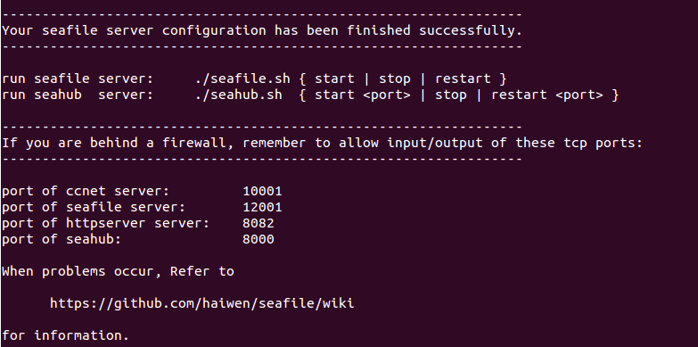

Deploying Seafile with MySQL¶
This manual explains how to setup and run Seafile server from a pre-built package with MySQL.
Tip: If you are deploying the Seafile service for the first time, we recommend that you use an automatic installation script to quickly deploy a Seafile service.
Download¶
Download the latest server package.
Deploying and Directory Layout¶
Supposed you have downloaded seafile-server_* into /opt/seafile/. We suggest you to use the following layout for your deployment:
mkdir /opt/seafile
mv seafile-server_* /opt/seafile
cd /opt/seafile
# after moving seafile-server_* to this directory
tar -xzf seafile-server_*
mkdir installed
mv seafile-server_* installed
Now you should have the following directory layout
#tree seafile -L 2
seafile
├── installed
│ └── seafile-server_7.0.0_x86-64.tar.gz
└── seafile-server-7.0.0
├── reset-admin.sh
├── runtime
├── seafile
├── seafile.sh
├── seahub
├── seahub.sh
├── setup-seafile-mysql.sh
└── upgrade
The benefit of this layout is that:
- We can place all the config files for Seafile server inside
/opt/seafile/confdirectory, making it easier to manage. - When you upgrade to a new version of Seafile, you can simply untar the latest package into
/opt/seafiledirectory. In this way you can reuse the existing config files in/opt/seafiledirectory and don't need to configure again.
Prepare MySQL Databases¶
Three components of Seafile Server need their own databases:
- ccnet server
- seafile server
- seahub
See Seafile Server Components Overview if you want to know more about the Seafile server components.
There are two ways to intialize the databases:
- let the
setup-seafile-mysql.shscript create the databases for you. - create the databases by yourself, or someone else (the database admin, for example)
We recommend the first way. The script would ask you for the root password of the mysql server, and it will create:
- database for ccnet/seafile/seahub.
- a new user to access these databases
However, sometimes you have to use the second way. If you don't have the root password, you need someone who has the privileges, e.g., the database admin, to create the three databases, as well as a mysql user who can access the three databases for you. For example, to create three databases: ccnet_db / seafile_db / seahub_db for ccnet/seafile/seahub respectively, and a mysql user "seafile" to access these databases run the following SQL queries:
create database `ccnet_db` character set = 'utf8';
create database `seafile_db` character set = 'utf8';
create database `seahub_db` character set = 'utf8';
create user 'seafile'@'localhost' identified by 'seafile';
GRANT ALL PRIVILEGES ON `ccnet_db`.* to `seafile`@localhost;
GRANT ALL PRIVILEGES ON `seafile_db`.* to `seafile`@localhost;
GRANT ALL PRIVILEGES ON `seahub_db`.* to `seafile`@localhost;
Setting Up Seafile Server¶
Prerequisites¶
The Seafile server package requires the following packages to be installed on your system:
For Seafile 7.0.x
# on Ubuntu 16.04
apt-get update
apt-get install python2.7 python-setuptools python-mysqldb python-urllib3 python-ldap -y
# on CentOS 7
yum install python python-setuptools MySQL-python python-urllib3 python-ldap -y
For Seafile 7.1.x
# on Debian 10/Ubuntu 18.04
apt-get update
apt-get install python3 python3-setuptools python3-pip -y
pip3 install --timeout=3600 Pillow pylibmc captcha jinja2 sqlalchemy \
django-pylibmc django-simple-captcha python3-ldap
# on CentOS 8
yum install python3 python3-setuptools python3-pip -y
pip3 install --timeout=3600 Pillow pylibmc captcha jinja2 sqlalchemy \
django-pylibmc django-simple-captcha python3-ldap
Setup¶
cd seafile-server-*
./setup-seafile-mysql.sh # run the setup script & answer prompted questions
If some of the prerequisites are not installed, the Seafile initialization script will ask you to install them.
The script will guide you through the settings of various configuration options.
Seafile configuration options
| Option | Description | Note |
|---|---|---|
| server name | Name of this seafile server | 3-15 characters, only English letters, digits and underscore ('_') are allowed |
| server ip or domain | The IP address or domain name used by this server | Seafile client program will access the server with this address |
| seafile data dir | Seafile stores your data in this directory. By default it'll be placed in the current directory. | The size of this directory will increase as you put more and more data into Seafile. Please select a disk partition with enough free space. |
| fileserver port | The TCP port used by Seafile fileserver | Default is 8082. If it's been used by other service, you can set it to another port. |
At this moment, you will be asked to choose a way to initialize Seafile databases:
-------------------------------------------------------
Please choose a way to initialize Seafile databases:
-------------------------------------------------------
[1] Create new ccnet/seafile/seahub databases
[2] Use existing ccnet/seafile/seahub databases
Which one to choose depends on if you have the root password.
- If you choose "1", you need to provide the root password. The script would create the databases and a new user to access the databases
- If you choose "2", the ccnet/seafile/seahub databases must have already been created, either by you, or someone else.
If you choose "[1] Create new ccnet/seafile/seahub databases", you would be asked these questions:
| Question | Description | Note |
|---|---|---|
| mysql server host | the host address of the mysql server | the default is localhost |
| mysql server port | the port of the mysql server | the default is 3306. Almost every mysql server uses this port. |
| root password | the password of mysql root account | the root password is required to create new databases and a new user |
| mysql user for Seafile | the username for Seafile programs to use to access MySQL server | if the user does not exist, it would be created |
| password for Seafile mysql user | the password for the user above | |
| ccnet dabase name | the name of the database used by ccnet, default is "ccnet_db" | the database would be created if not existing |
| seafile dabase name | the name of the database used by Seafile, default is "seafile_db" | the database would be created if not existing |
| seahub dabase name | the name of the database used by seahub, default is "seahub_db" | the database would be created if not existing |
If you choose "[2] Use existing ccnet/seafile/seahub databases", you would be asked these questions:
related questions for "Use existing ccnet/seafile/seahub databases"
| Question | Description | Note |
|---|---|---|
| mysql server host | the host address of the mysql server | the default is localhost |
| mysql server port | the port of the mysql server | the default is 3306. Almost every mysql server uses this port |
| mysql user for Seafile | the user for Seafile programs to use to access MySQL server | the user must already exists |
| password for Seafile mysql user | the password for the user above | |
| ccnet dabase name | the name of the database used by ccnet, default is "ccnet-db" | this database must already exist |
| seafile dabase name | the name of the database used by Seafile, default is "seafile-db" | this database must already exist |
| seahub dabase name | the name of the database used by Seahub, default is "seahub-db" | this database must already exist |
If the setup is successful, you'll see the following output

Now you should have the following directory layout :
#tree seafile -L 2
seafile
├── ccnet # configuration files
│ ├── mykey.peer
│ ├── PeerMgr
│ └── seafile.ini
├── conf
│ └── ccnet.conf
│ └── seafile.conf
│ └── seahub_settings.py
│ └── gunicorn.conf
├── installed
│ └── seafile-server_7.0.0_x86-64.tar.gz
├── seafile-data
├── seafile-server-7.0.0 # active version
│ ├── reset-admin.sh
│ ├── runtime
│ ├── seafile
│ ├── seafile.sh
│ ├── seahub
│ ├── seahub.sh
│ ├── setup-seafile-mysql.sh
│ └── upgrade
├── seafile-server-latest # symbolic link to seafile-server-7.0.0
├── seahub-data
│ └── avatars
The folder seafile-server-latest is a symbolic link to the current Seafile server folder. When later you upgrade to a new version, the upgrade scripts update this link to point to the latest Seafile Server folder.
Running Seafile Server¶
Starting Seafile Server and Seahub Website¶
Under seafile-server-latest directory, run the following commands
./seafile.sh start # Start Seafile service
./seahub.sh start # Start seahub website, port defaults to 127.0.0.1:8000
The first time you start Seahub, the script would prompt you to create an admin account for your Seafile Server.
Note: The Seahub service listens on 127.0.0.1:8000 by default. So we recommend that you deploy a reverse proxy service so that other users can access the Seahub service.
Deploy a reverse proxy service¶
You can choose Apache or Nginx as the reverse proxy service.
After deployed the reverse proxy service, you may open a web browser and visit Seafile web interface at (assume your server IP is 192.168.1.111):
http://192.168.1.111/
Congratulations! Now you have successfully setup your private Seafile Server.
Run Seahub on another port¶
If you want to run Seahub on a port other than the default 8000, say 8001, you must modify the conf/gunicorn.conf:
# default localhost:8000
bind = "0.0.0.0:8001"
Then restart Seafile service:
./seafile.sh restart
./seahub.sh restart
Stopping and Restarting Seafile and Seahub¶
Stopping¶
./seahub.sh stop # stop Seahub website
./seafile.sh stop # stop Seafile processes
Restarting¶
./seafile.sh restart
./seahub.sh restart
When the Scripts Fail¶
Most of the time, seafile.sh and seahub.sh work fine. But if they fail, you may
- Use
pgrepcommand to check if seafile/seahub processes are still running
pgrep -f seafile-controller # check seafile processes
pgrep -f "seahub" # check seahub process
- Use
pkillto kill the processes
pkill -f seafile-controller
pkill -f "seahub"
Performance turning¶
If you have more than 50 users, we highly recommand you to add memcached. This is going to greatly speed up Seahub (the web frontend).
Setup in non-interactive way¶
Since Seafile Pro Edition version 5.1.4, setup-seafile-mysql.sh supports auto mode. You can run the setup script in non-interactive by supplying the needed parameters via script parameters or environment variables.
cd seafile-server-*
./setup-seafile-mysql.sh auto [param1] [param2]...
Related parameters as follow:
| Option | Script parameter | Environment variable | Default value |
|---|---|---|---|
| server name | -n | SERVER_NAME | hostname -s(short host name) |
| server ip or domain | -i | SERVER_IP | hostname -i(address for the host name) |
| fileserver port | -p | FILESERVER_PORT | 8082 |
| seafile data dir | -d | SEAFILE_DIR | current directory |
| use existing db | -e | USE_EXISTING_DB | 0(create new db) |
| mysql server host | -o | MYSQL_HOST | 127.0.0.1 |
| mysql server port | -t | MYSQL_PORT | 3306 |
| mysql root password | -r | MYSQL_ROOT_PASSWD | no default value(must be set when create new db) |
| mysql user for seafile | -u | MYSQL_USER | no default value(must be set) |
| password for seafile mysql user | -w | MYSQL_USER_PASSWD | no default value(must be set) |
| mysql user host | -q | MYSQL_USER_HOST | no default value(must be set when create new db and using non local mysql server) |
| ccnet dabase name | -c | CCNET_DB | ccnet-db |
| seafile dabase name | -s | SEAFILE_DB | seafile-db |
| seahub dabase name | -b | SEAHUB_DB | seahub-db |
Note: If both script parameter and environment variable assigned, script parameter has higher priority. If neither script parameter nor environment variable assigned, default value will be used.
That's it!¶
That's it! Now you may want read more about Seafile.